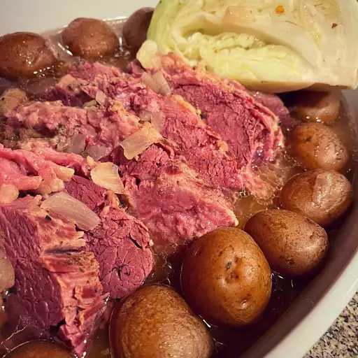

Slow-Cooker Corned Beef and Cabbage

No more dry corned beef! Cook this in your slow cooker all day and you're guaranteed success! Serve this with soda bread for a warm and satisfying meal.
Ingredients
- 4 large carrots, peeled and cut into matchstick pieces
- 10 baby red potatoes, quartered
- 1 onion, peeled and cut into bite-sized pieces
- 4 cups water
- 1 (4 pound) corned beef brisket with spice packet
- 6 ounces beer
- ½ head cabbage, coarsely chopped
Direction
Steps
- Place the carrots, potatoes, and onion into the bottom of a slow cooker, pour in the water, and place the brisket on top of the vegetables. Pour the beer over the brisket. Sprinkle on the spices from the packet, cover, and set the cooker on High.
- Cook the brisket for about 8 hours. An hour before serving, stir in the cabbage and cook for 1 more hour.
Return to hompage